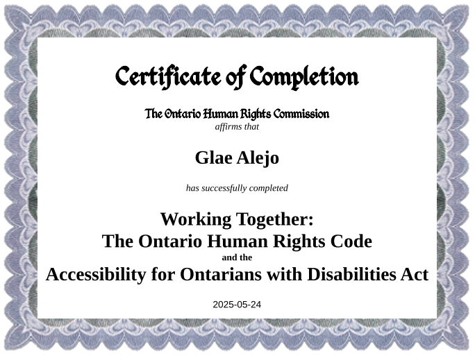

Hi, i'm Glae
Grade 11 co-op student who loves art and code!
Introduction
Hello and welcome to my portfolio! My name is Glae Alejo (they/them), and I am a Grade 11 co-op student with a passion for art and code. My hobbies include gamedev, front-end development, digital art and graphic design.
My main goal after high school is to get into a university program for Computer Science or Software Engineering, preferably one with co-op opportunities for smooth transition into the workforce.
And after that, I hope to work in the tech industry, building expressive systems that sharpen thought and deepen connection to the imagination.
Documents for Job Applications
Resume, Cover Letter and Reference Sheet documents. To view them, you must sign in with a PDSB account.
Resume
My resume, recently updated for job posting of Website Developer (Contract) @ ISPS-Canada
Cover Letter
Here is my letter to Website Developer (Contract) @ ISPS-Canada
Reference Sheet
My reference sheet for job applications
CELP (Co-operative Education Learning Plan)
The CELP outlines the goals and curriculum expectations for my placement. It serves as a roadmap, a "living document" for my learning and development throughout the month.
Along with the CELP, there is also an Evidence Log document I have attached to demonstrate my progress on developing workplace skills during the placement.
Here are some course expectations (both tieback course ICS3U and Co-op course) that I feel I have demonstrated at my placement:
CELP
My CELP document outlining the goals and expectations for my co-op placement
Evidence Log
My Evidence Log document showing my progress on developing workplace skills
Co-op Course Expectation 1:
A1. Health, Safety and Well Being: demonstrate an understanding of legislation, practices, and behaviours related to Health and Safety and well-being in connection with the Co-operative Education experience
I have demonstrated this by completing online modules for WHMIS and Worker Health and Safety Awareness in 4 Steps. The essential skills required to complete these modules and apply the knowledge gained in a practical setting include digital skills, reading text and thinking. The work habits developed include working independently and working safely.
During my co-op placement, even while working from home, I applied safe work habits by maintaining an organized workspace, taking regular screen breaks and standing up to prevent strain in the eyes and lower body. These actions ensured my well-being and demonstrated my commitment to health and safety in a remote environment.
Tieback Course Expectation 2:
A4.2 use workplace and professional conventions (e.g., naming, indenting, commenting) correctly to write programs and internal documentation
I have demonstrated this course expectation by following the writing and formatting standards of the workplace throughout my co-op placement for QA tasks. The essential skills required to meet this course expectation include reading and writing text, as well as digital skills, because the tools we use to document bugs and feature tasks are entirely online and require proficiency in using them effectively.
Throughout my placement, I focused on QA tasks using Azure DevOps and the board to track bugs and feature requests. I made sure to use clear and consistent formatting for every task, including a description, steps to reproduce (if applicable), expected and actual behaviour, and screenshots. By following the documentation standards set for QA, I improved communication and collaboration within our remote team, ensuring that all information was organized and accessible. The first image shows my bug report writing, while the second is an exemplar by the Co-op team lead Gino Abrogena.
Tieback Course Expectation 3:
B4.3 use project management tools (e.g., Gantt chart, critical path diagram, PERT chart) to show tasks and milestones in a teacher-led project
I have demonstrated this course expectation by using Azure DevOps, the main project management tool we used at Hippos, to manage my tasks and milestones throughout my co-op placement. The essential skills required to meet this course expectation include digital skills, as well as the ability to read and interpret project management tools effectively.
For example, I regularly updated my assigned tasks on the Azure DevOps board, tracked progress using status columns and properly assigned tasks back to developers. The QA flowchart helped me visualize the steps for reporting and resolving bugs, ensuring that each task moved efficiently from identification to completion. By collaborating with my team and following the project workflow, I contributed to meeting project goals and learned how structured project management improves productivity and accountability.
Certifications
- 
Skills
You can view more of my skills on my public portfolio website at https://glae.me, including personal passion projects and artwork!